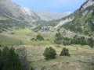

|
Camera model: Canon PowerShot A40 Exposure time: 1/125s Aperture: 2.8 Metering mode: Evaluative Focal length: 5.40625mm Original size: 0.15 Mb |
Camera model: Canon PowerShot A40 Exposure time: 1/40s Aperture: 2.8 Metering mode: Focal length: 5.40625mm Original size: 0.67 Mb |
Camera model: Canon PowerShot A40 Exposure time: 1/60s Aperture: 2.8 Metering mode: Evaluative Focal length: 5.40625mm Original size: 0.38 Mb |
Camera model: Canon PowerShot A40 Exposure time: 1/60s Aperture: 2.8 Metering mode: Evaluative Focal length: 5.40625mm Original size: 0.29 Mb |
Camera model: Canon PowerShot A40 Exposure time: 1/60s Aperture: 2.8 Metering mode: Evaluative Focal length: 5.40625mm Original size: 0.41 Mb |
|
Camera model: Canon PowerShot A40 Exposure time: 1/160s Aperture: 14.0 Metering mode: Focal length: 16.1875mm Original size: 0.47 Mb |
Camera model: Canon PowerShot A40 Exposure time: 1/160s Aperture: 11.0 Metering mode: Focal length: 11.3125mm Original size: 0.67 Mb |
Camera model: Canon PowerShot A40 Exposure time: 1/60s Aperture: 3.5 Metering mode: Focal length: 7.84375mm Original size: 0.52 Mb |
Camera model: Canon PowerShot A40 Exposure time: 1/250s Aperture: 8.0 Metering mode: Focal length: 5.40625mm Original size: 0.78 Mb |
Camera model: Canon PowerShot A40 Exposure time: 1/200s Aperture: 2.8 Metering mode: Focal length: 5.40625mm Original size: 1.03 Mb |
|
 Camera model: Canon PowerShot A40 Exposure time: 1/500s Aperture: 2.8 Metering mode: Evaluative Focal length: 5.40625mm Original size: 0.52 Mb |
Camera model: Canon PowerShot A40 Exposure time: 1/1000s Aperture: 2.8 Metering mode: Focal length: 5.40625mm Original size: 0.95 Mb |
Camera model: Canon PowerShot A40 Exposure time: 1/1000s Aperture: 2.8 Metering mode: Focal length: 5.40625mm Original size: 0.75 Mb |
Camera model: Canon PowerShot A40 Exposure time: 1/200s Aperture: 8.0 Metering mode: Evaluative Focal length: 5.40625mm Original size: 0.63 Mb |
Camera model: Canon PowerShot A40 Exposure time: 1/250s Aperture: 8.0 Metering mode: Focal length: 5.40625mm Original size: 0.76 Mb |
|
Camera model: Canon PowerShot A40 Exposure time: 1/160s Aperture: 8.0 Metering mode: Evaluative Focal length: 5.40625mm Original size: 0.47 Mb |
Camera model: Canon PowerShot A40 Exposure time: 1/160s Aperture: 8.0 Metering mode: Focal length: 5.40625mm Original size: 0.72 Mb |
Camera model: Canon PowerShot A40 Exposure time: 1/60s Aperture: 2.8 Metering mode: Evaluative Focal length: 5.40625mm Original size: 0.39 Mb |
Camera model: Canon PowerShot A40 Exposure time: 1/125s Aperture: 8.0 Metering mode: Evaluative Focal length: 5.40625mm Original size: 0.47 Mb |
Camera model: Canon PowerShot A40 Exposure time: 1/60s Aperture: 10.0 Metering mode: Evaluative Focal length: 7.84375mm Original size: 0.39 Mb |
|
Camera model: Canon PowerShot A40 Exposure time: 1/200s Aperture: 2.8 Metering mode: Evaluative Focal length: 5.40625mm Original size: 0.38 Mb |
Camera model: Canon PowerShot A40 Exposure time: 1/160s Aperture: 8.0 Metering mode: Focal length: 5.40625mm Original size: 0.77 Mb |
Camera model: Canon PowerShot A40 Exposure time: 1/1000s Aperture: 2.8 Metering mode: Evaluative Focal length: 5.40625mm Original size: 0.51 Mb |
Camera model: Canon PowerShot A40 Exposure time: 1/640s Aperture: 2.8 Metering mode: Evaluative Focal length: 5.40625mm Original size: 0.58 Mb |
Camera model: Canon PowerShot A40 Exposure time: 1/60s Aperture: 2.8 Metering mode: Evaluative Focal length: 5.40625mm Original size: 0.33 Mb |
|
Camera model: Canon PowerShot A40 Exposure time: 1/80s Aperture: 2.8 Metering mode: Evaluative Focal length: 5.40625mm Original size: 0.49 Mb |
JAlbum 5.2
XPhactor skin design by John S. Reque